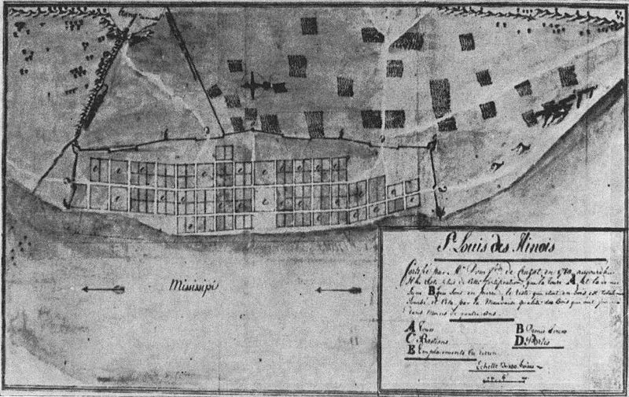
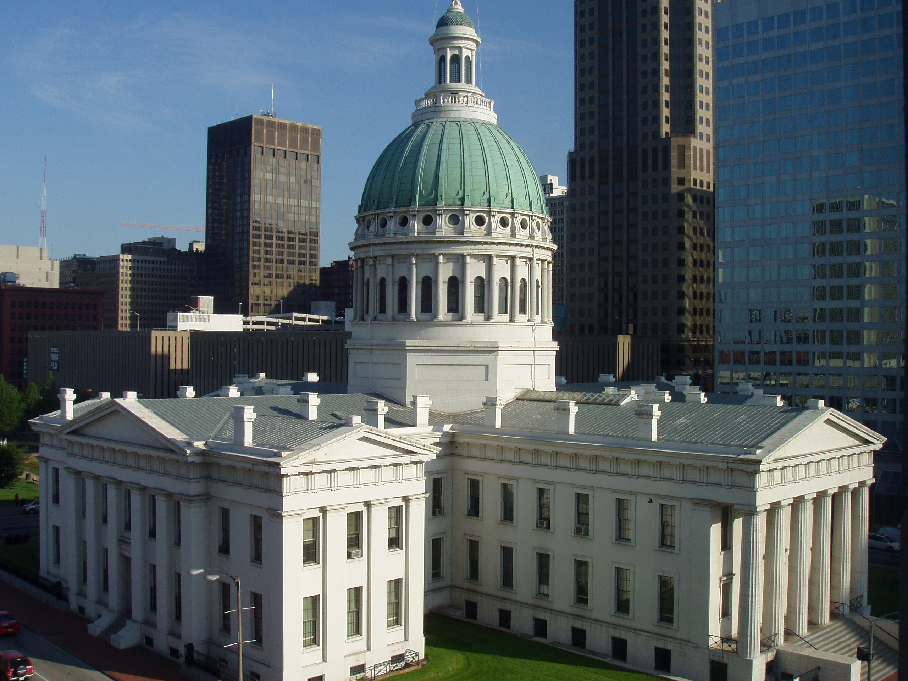
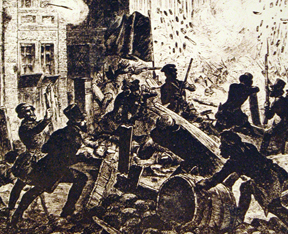
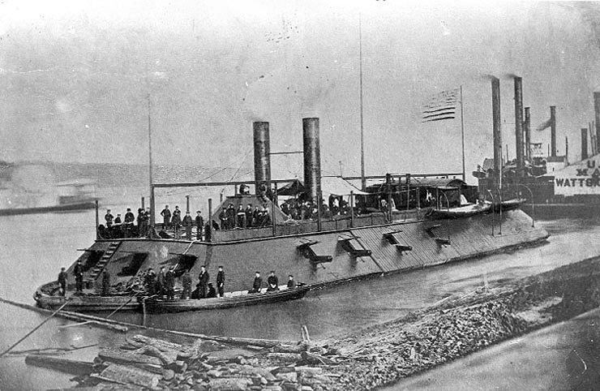

|
Founded by French fur traders in the late seventeenth century, St. Louis became an
American possession with the Louisiana Purchase of 1803. Throughout the antebellum period,
the city experienced rapid growth, as traders and industrialists exploited its prime
location on the Mississippi River. By the start of the Civil War, St. Louis was one of the
largest and most important cities in the country.
French explorers first arrived in the Mississippi River Valley in the late seventeenth
century, claiming it for King Louis XIV, and naming the area 'Louisiana' in his honor. The
region remained sparsely settled for many years thereafter, and so nearly a century passed
|

Plan for the city of St. Louis, 1780
|
before St. Louis was founded in 1764. The city's location, just south of where the
Mississippi and Missouri Rivers intersect, was chosen because of the trade opportunities
that it presented. It became the capital of Upper Louisiana in 1765, and then was
transferred to Spain in 1768, after the French and Indian War. Throughout this time, St.
Louis grew steadily, at least by the standards of an eighteenth century frontier town. By
1800, it was home to about 1,000 individuals.
In the first few years of the nineteenth century, St. Louis changed hands two more
times. The French regained control of Louisiana in 1800, and had hopes of rebuilding their
North American empire. However, before France could take full control of St. Louis,
military defeats in Haiti caused them to abandon their ambitious plans. In need of money,
French First Consul Napoleon Bonaparte decided to sell Louisiana to the United States,
consummating the deal in 1803. When the American government took formal control of St.
Louis in 1804, residents staged a ceremony called "Three Flags Day." The Spanish flag was
lowered, and then replaced by the French flag, to much cheering among the town's mostly
French residents. Two days later, the French flag was replaced by the American Flag. This
time, there was very little cheering.
St. Louis was on the eastern boundary of the Louisiana Purchase, and as such it quickly
became Americans' "Gateway to the West." Explorers Meriwether Lewis and William Clark
launched their famous expedition from there in May of 1804, returning in September of
1806. In the next four decades, a great many explorers followed their lead, including
William Henry Ashley, Zebulon Pike, Kit Carson, and John C. Frémont. St. Louis'
location—near the center of the country, close to two major rivers and several important
Indian trails—afforded access to nearly any portion of the West.
In the 1810s and 1820s, the economy and infrastructure of St. Louis developed
dramatically. The first steamboat, the Zebulon M. Pike, arrived in 1817. As the
settlement was as far north as many large steamboats could travel up the Mississippi, it
immediately became the United States' most important inland port, and was formally
incorporated as a city in 1822. Within 30 years, St. Louis was handling more tonnage than
any other port in America besides New York. Recognizing the increasing significance of the
city for river commerce and westward travelers, the U.S. government commissioned a federal
arsenal to be built in St. Louis in 1827. Two years later, Saint Louis University opened
as the first institution of higher learning west of the Mississippi.
For a time in the 1830s, St. Louis' economy appeared to be in peril--the flow of the
Mississippi River changed slightly, creating an island south of the city—Duncan's
Island—that threatened to block access to ships traveling up from New Orleans and the Gulf
of Mexico. City leaders turned to the federal government for help, and in 1837 a team of
U.S. Army engineers under the command of Lieutenant Robert E. Lee was dispatched to St.
Louis. The future general oversaw the construction of levees that corrected the river's
flow and washed away the unwanted island.
In the antebellum era, St. Louis' population grew much larger and more diverse. Anglo
Americans dominated the city before 1840, though there was also had a sizable population
|

The St. Louis courthouse was the crown jewel of the
city's skyline for decades, and earned fame as the site where Dred
Scott first adjudicated his case (before moving on to the Supreme
Court).
|
of slaves, a small free African American community, and a handful of French Americans.
After 1840, these groups were joined by enormous numbers of immigrants from Ireland,
Germany, and Italy. Just as St. Louis' location made it a prime target for merchants and
traders, so too was it an excellent and accessible destination for new Americans. In 1840,
before the surge in immigration, St. Louis' population was a respectable 16,469, making it
the twenty-seventh largest city in the county. By 1850, the number of residents had jumped
to 77,860, vaulting St. Louis into the top ten. It remained there in 1860, by which time
160,773 people called the city home. At any given time, the city's residents were also
joined by many thousands of temporary visitors, en route to the gold rush in California or
to other points west.
As with other large cities in antebellum America, St. Louis' leaders sometimes
struggled to cope with its dramatic growth. The city's low point came in 1849, when a pair
of disasters struck. First, a severe cholera epidemic, likely started by travelers,
descended upon St. Louis. One resident out of ten perished. Then, on May 17, as the city
was still coping with the outbreak of cholera, the steamboat The White Cloud caught
fire. Volunteer firefighters tried to contain the blaze, but it quickly spread to dozens
of other boats, and then to the docks, and then to all of the buildings on the waterfront.
In all, the fire burned for 11 hours, killing three people, and destroying over 400
buildings. St. Louis rebuilt, slowly but surely, with structures built of brick or stone
rather than wood, and with an impressive new water and sewage system.
In the years immediately before the Civil War, St. Louis was the subject of much
attention. In part, this was because it was the home of Dred Scott, the slave who sued for
his freedom and lost. Further, St. Louis was the most prominent city in the most prominent
"border" state. Consequently, politicians in both North and South worked to secure the
city's loyalty. Residents of the city also played a significant role in the events of
"Bleeding Kansas."
When the Civil War began, St. Louis—like the rest of Missouri—was divided. The city's
native-born population, led by state governor Claiborne Fox Jackson, largely supported the
|

Artist's depiction of the riots that were part
of the Camp Jackson Affair
|
Confederacy. The city's immigrant population, particularly the large contingent of
Germans, generally favored the Union. When Union captain Nathaniel Lyon arrived on the
scene, armed with orders to make certain the city was secure, he learned that Governor
Jackson was drilling the Missouri State militia at an encampment called Camp Jackson,
presumably with the intention of joining the Confederate Army. Lyon also discovered
evidence of a plot to seize the St. Louis Arsenal and its 40,000 guns. In response to the
situation, Lyon immediately began recruiting volunteer militiamen—the great majority of
those who responded (more than 80%) were German immigrants. Once he had substantial
manpower at his disposal, Lyon arranged for most of the St. Louis Arsenal's armaments to
be shipped to Illinois, and then on May 10 marched with 6,000 men to Camp Jackson. There,
the members of the Missouri State militia—about 700 in total—were compelled to surrender.
While the surrender was achieved without incident, tensions began to reach a breaking
point when the militiamen were marched back to St. Louis. During the march, angry
civilians began to congregate along the city's streets, and they hurled rocks, bricks, and
racial slurs at the Germans under Lyon's command. Ultimately, a shot was fired—likely on
accident, by someone under the influence of alcohol—and a riot commenced. For several
days, the city was in a state of chaos, with German immigrants—many of them women and
children—targeted by mobs. Order was restored, and martial law imposed, when regular
Federal troops arrived. By the time the "Camp Jackson Affair" had reached its conclusion,
28 people were dead and another 50 were seriously injured.
The Camp Jackson Affair electrified St. Louisans on both sides of the conflict.
Thousands of German immigrants flocked to become regular enlistees in the Union Army;
these men ultimately earned the sobriquet "saviors of Missouri." Thousands of native-born
citizens rallied to Jackson's banner and joined him in forming a semi-official division of
the Confederate Army. Jackson's governorship was declared vacant, and filled by a loyal
Unionist—Hamilton Gamble—who worked with Lyon to maintain strict control of St. Louis for
the rest of the war. Jackson, for his part, insisted that he was still the state's
|

The U.S.S. Cairo, one of the St. Louis-made
gunboats that helped capture the city of Vicksburg
|
governor, and established a competing state government at the Missouri town of Neosho.
Jackson's and Lyon's troops fought several battles, most notably the Battle of Wilson's
Creek on August 10, 1861. In most of these engagements, Lyon's troops won convincingly.
Despite the tensions that characterized Civil War-era St. Louis, and the battles fought
between Lyon and Jackson in adjacent areas, the city itself saw no further combat or
violence after the Camp Jackson Affair. It became an important depot for the movement of
troops and supplies, and a destination for thousands of refugees, who were aided by the
Freedmen's Relief Society, the Ladies Union Aid Society, the Western Sanitary Commission,
and the American Missionary Association. In addition to producing several regiments of
highly-effective troops, the city also gave the Union one of its most important
generals—Maj. Gen. William T. Sherman—and also produced gunboats for the Union Navy (most
famously City-class ironclads, also known as "Pook Turtles"). St. Louis-made
warships were particularly significant during Maj. Gen. Ulysses S. Grant's campaign
against the Mississippi city of Vicksburg in 1863.
Despite its contributions to the Union war machine, St Louis's economy suffered
tremendously during the Civil War, as government contracts to build ironclad ships could
not offset the loss of trade with the South. After the Confederates surrendered at
Appomattox, however, St. Louis bounced back relatively quickly. Its business in trade
resumed, and the city industrialized. By the 1870, St. Louis was the nation's fourth
largest city, trailing only New York, Brooklyn, and Philadelphia. It remained an economic
powerhouse, and the South's largest city, until well after World War II.
Source: Christopher Bates for the History 139A website.
|